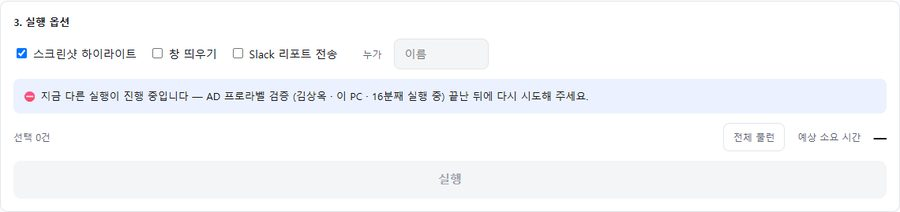
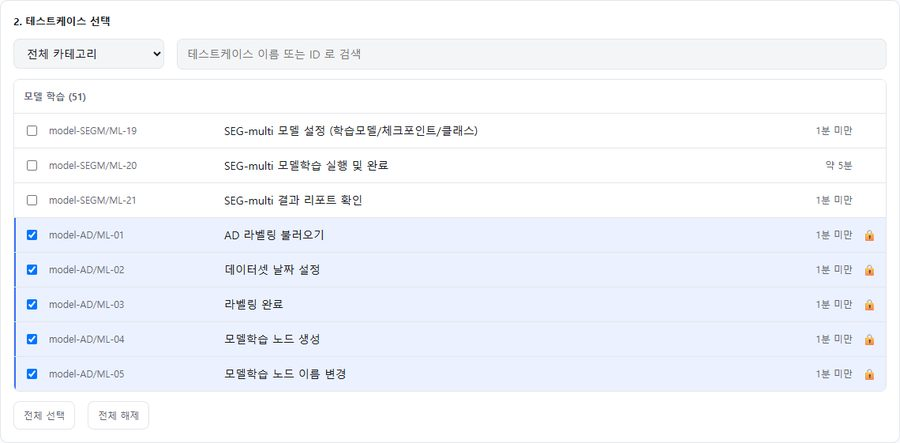
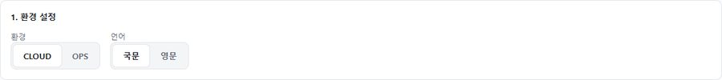
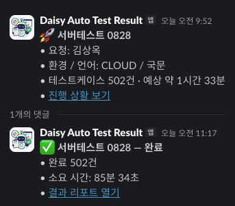
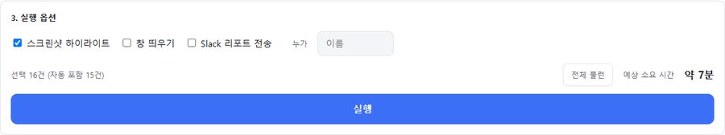
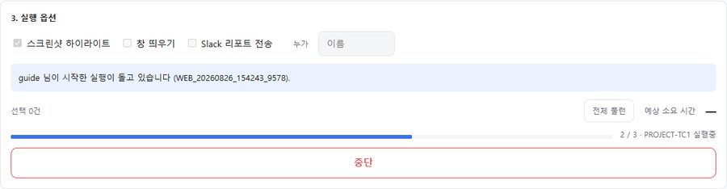
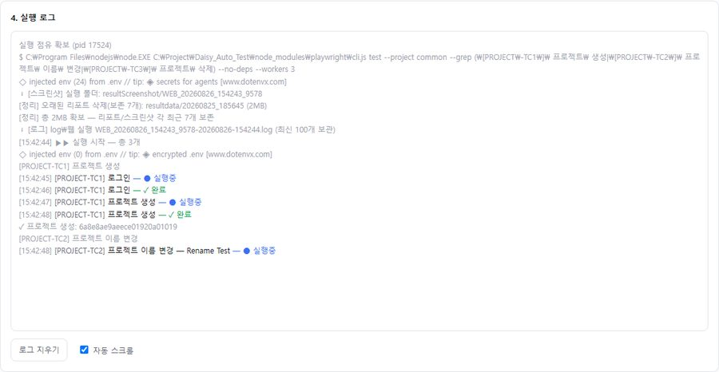
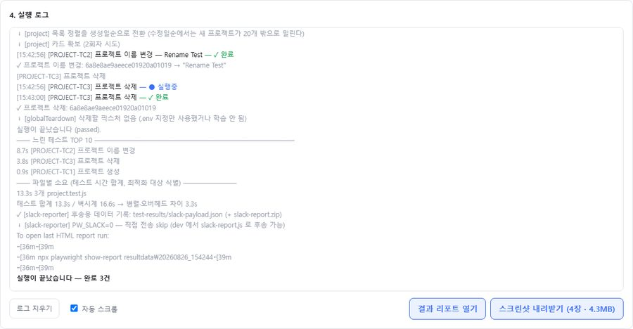
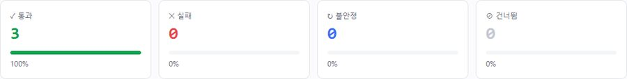
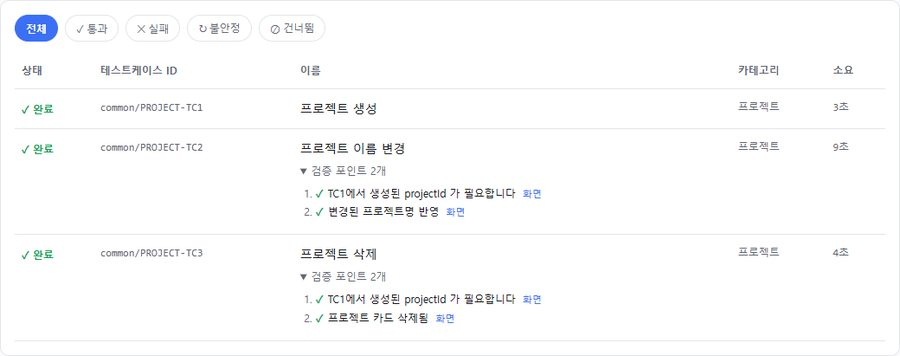

전사가 같은 제품을 만들고 있는데, 그 제품을 검증할 수 있는 사람은 몇 명뿐이었습니다. 만드는 사람이라면 누구나 자기가 바꾼 것을 직접 확인할 수 있어야 한다고 봤습니다. 그래서 설치도 명령어도 없이 브라우저만 있으면 검증이 돌아가는 환경을 만들었고, 설계 · 구현 · 사용자 문서화까지 단독으로 진행했습니다.
같은 제품을 함께 만드는데 품질 확인은 QA를 거쳐야만 이뤄졌습니다. 스위트는 완성됐지만 터미널·환경 설정을 아는 사람만 돌릴 수 있었습니다.
“도구를 모르는 사람이 눌러도 잘못될 수 없다”를 기준으로, 안전한 기본값과 자동 의존성 해결을 갖춘 검증 환경을 만들었습니다.
만든 사람이 자기가 바꾼 것을 직접 검증하고, QA는 무엇을 어떻게 검증할지 설계하는 데 집중합니다.

공유 계정 제약은 없앨 수 없으므로 동시 실행을 차단하되, 차단이 “고장”으로 보이지 않도록 누가 · 무엇을 · 몇 분째 돌리는지를 같은 화면에 노출했습니다.

프로라벨을 검증하려면 모델이 먼저 학습돼 있어야 합니다. 이 의존 관계를 사용자가 알아야 한다면 셀프서비스가 아니므로, 러너가 선행 테스트를 자동으로 선택하고 🔒로 표시합니다. 마우스를 올리면 무엇 때문에 포함됐는지까지 나옵니다. 1건을 체크하면 16건이 선택됩니다.


선택 건수와 예상 소요 시간을 즉시 계산하되, 단순 합산이 아니라 3-worker 병렬이라는 실제 실행 방식을 반영한 값을 씁니다. 환경과 언어를 바꾸면 대상 테스트케이스 목록 자체가 함께 갱신됩니다.

옵션은 세 개로 줄이고 기본값 그대로 실행해도 문제가 없도록 정했습니다. 화면이 없는 서버에서는 브라우저 창을 띄울 수 없으므로 해당 옵션을 회색 처리하지 않고 아예 감춥니다.


진행률은 “끝난 수 / 전체”와 현재 테스트를 함께 보여주고, 실행 로그는 실시간 스트리밍됩니다. 창을 닫았다 다시 열어도, 다른 사람이 시작한 실행에 접속해도 로그와 진행률이 그대로 복원됩니다.

실행이 끝나면 결과 리포트 열기 · 스크린샷 zip 내려받기 두 버튼이 나타납니다. 서버에서 실행해도 내려받기는 로컬로 떨어지고, 새로고침하거나 나중에 다시 열어도 직전 실행 결과는 계속 회수할 수 있습니다.
자동화의 결과물이 PASS/FAIL 숫자로만 끝나면, 사람은 그 숫자를 검증할 방법이 없습니다.


각 테스트의 검증 포인트를 펼치면 무엇을 어떤 순서로 확인했는지가 나오고, 줄 끝의 “화면”을 누르면 그 시점 스크린샷이 열립니다. 통과한 테스트에도 동일하게 붙습니다.
| 표시 | 뜻 | 취급 |
|---|---|---|
| 완료 | 검증을 통과 | 정상 |
| 실패 | 기대 결과와 다름 — 사유와 화면이 함께 제공 | 원인 확인 |
| 불안정 | 재시도해서 통과 | 초록이 아님 · 확인 필요 |
| 건너뜀 | 선행 실패 또는 중단으로 미실행 | 선행 결과부터 확인 |
화면 순서를 그대로 따라가는 가이드를 도구와 함께 작성했습니다.
| 항목 | Before | After |
|---|---|---|
| 실행 주체 | 터미널 접근 가능한 QA 1인 | 개발·QA 팀원 누구나 (브라우저 주소 하나) |
| 실행 준비 | 클론 · 의존성 설치 · 환경 변수 · 명령어 숙지 | 설치 0단계 · 명령어 0줄 |
| 동시 실행 사고 | 공유 계정 충돌로 양쪽 모두 실패 | 단독 실행 보장 + 실행자·경과 시간 노출 |
| 선행 조건 | 사용자가 의존 관계를 알고 직접 선택 | 러너가 자동 선택 · 포함 사유 표시 |
| 실행 중 이탈 | 세션이 끊기면 진행 상황 유실 | 재접속 시 로그·진행률 복원 (타인 실행 포함) |
| 결과 회수 | 서버에 남고 개인 PC로 가져올 경로 없음 | 리포트 · 스크린샷 zip 원클릭 다운로드 |